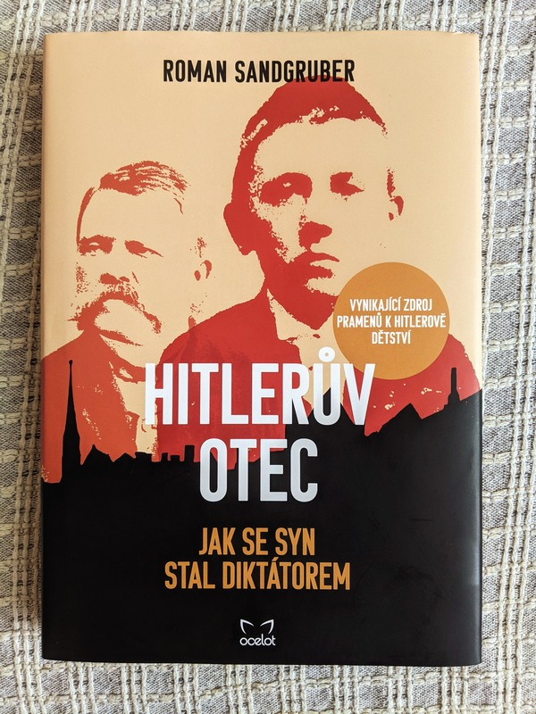

Literatura faktu se tu u mě na blogu zas tak často neobjevuje, byť se jí rozhodně nebráním, pokud mě tematicky zaujme. To byl i případ letní nabídky recenzního výtisku z knihkupectví Megaknihy.cz. Dějiny druhé světové války a nacistického Německa určitě patří k tématům, o nichž by měl mít povědomí každý z nás. Kniha Hitlerův otec s podtitulem Jak se syn stal diktátorem slibuje možnost poprvé autenticky nahlédnout do životních podmínek Hitlerovy rodiny.
Sandgruberův výzkum vychází z jednatřiceti dopisů Hitlerova otce, Aloise Hitlera, které byly po více než sto letech objeveny, a v nichž popisuje svůj každodenní život i “hospodaření”. Autor tvrdí, že tyto dopisy vrhají na dětství a mládí obávaného diktátora nové světlo a jsou dostatečně zajímavé na to, aby na jejich podkladě mohla vzniknout kniha. Nutno hned na úvod říct, že já jeho názor bohužel nesdílím…
Jednak naprosto nemám pocit, že by se jednalo o tak přelomový nález, který by přinášel nečekaná fakta. Kniha je plná fádních a nic neříkajících dat, finančních rodinných otázek a z mého pohledu naprosto irelevantních a nezáživných informací. Naopak témata, která by mohla být opravdu zajímavá, autor příliš nerozvíjí. Přijde mi, že v tomto ohledu si publikace Hitlerův otec(soudě dle anotace) hraje na něco zcela jiného, než čím ve skutečnosti je. Šokující odhalení tady opravdu nečekejte.
O něco záživnější mi přišla až druhá polovina knihy, která se více věnuje dětství Adolfa Hitlera a letům jeho školní docházky, letmo se dotkne i vztahů v rodině, nicméně opět nemám pocit, že by v ní do tématu více ponořený čtenář objevil něco, co ještě nikdy předtím jinde nečetl. A hlavně - u knihy, která se tváří jako historii popularizující dílo, bych čekala, že bude psaná čtivou a zábavnou formou. Bohužel se i v tomto ohledu koná zklamání, Sandgruberův jazyk je spíše fádní a nezáživný.
Kniha oplývá bohatou obrazovou přílohou i rozsáhlým seznamem zdrojů a literatury, ale tím už si u čtenáře skóre bohužel moc nevylepší. Za mne se opravdu nejedná o nějak přelomové dílo, které by stálo za víc než jedno přečtení.
